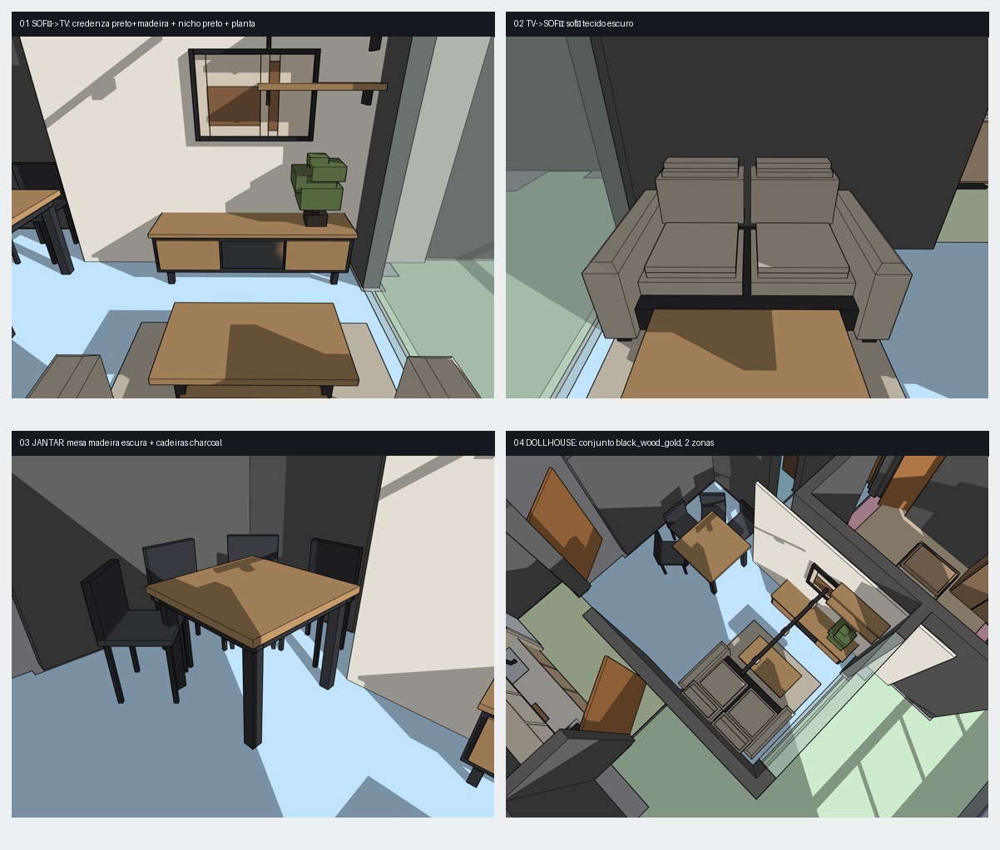

SALA r002 — LINGUAGEM black_wood_gold (FASE 1: flat)
só cor, layout validado intacto
Móveis na linguagem da cozinha. Paredes ganham tratamento escuro no V-Ray (fase 3). scorecard WARN.
Aplicado:
credenza preto+madeira escura + nicho preto · sofá tecido escuro · jantar madeira escura + cadeiras charcoal · tapete neutro quente · planta verde acento · LED quente.
Painel de mídia (parede) entra prominente só no V-Ray.
